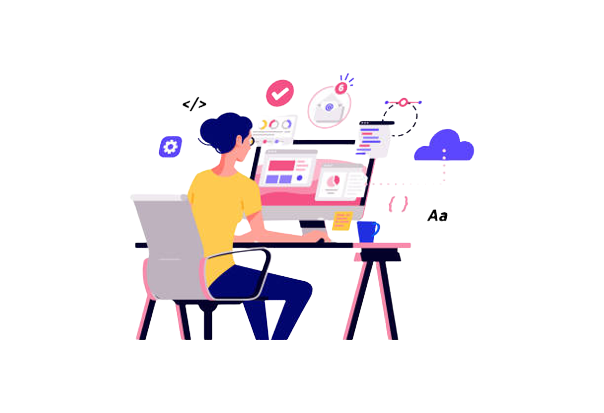

Hi, I'm Nidhi H N
and I'm passionate


Greetings! I'm Nidhi H N, a dedicated web developer with a knack for turning ideas into interactive, visually appealing, and user-friendly websites. With a deep-rooted passion for coding and an eye for design. My expertise spans across a range of technologies, including HTML, CSS, JavaScript, and more. Whether it's crafting responsive and mobile-friendly websites, optimizing performance, or diving into the world of web applications, I relish every challenge that web development throws my way. In addition to my technical skills, I'm a firm believer in the importance of effective communication and collaboration. Building strong relationships with clients, designers, and fellow developers is key to delivering successful projects.
Skills
Education